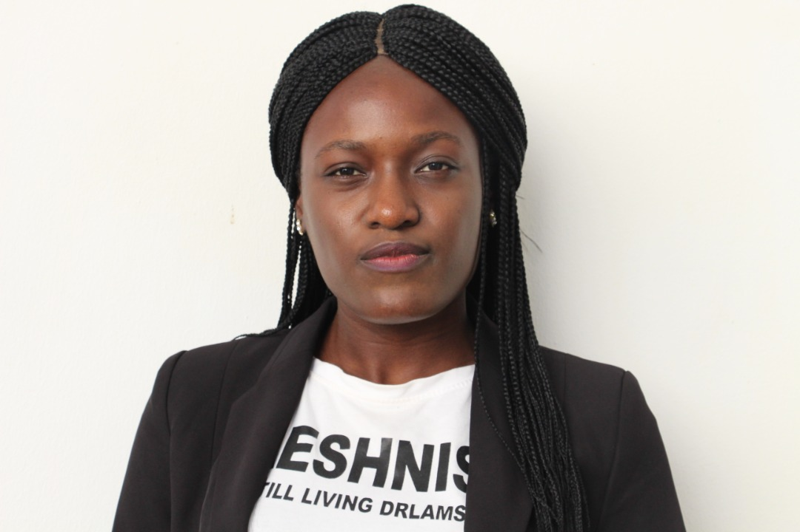
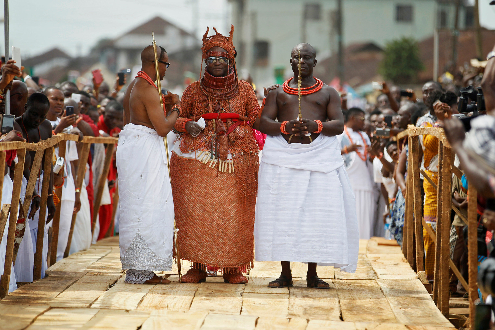
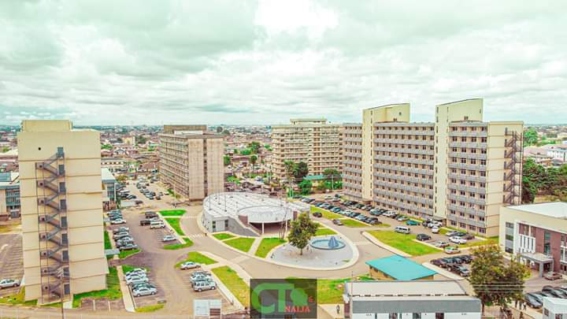
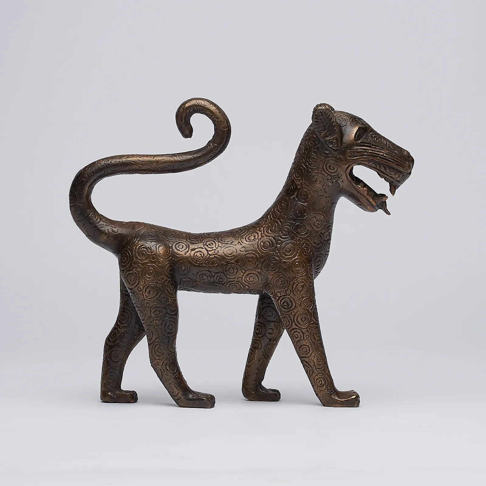

01
About Me

My name is Josephine Nation Ekhator. I am a student of African Leadership University, Mauritius and I major in
computing.
I am a determined person who is passionate about mentoring, tutoring, and lecturing students across the
continent that will help in building a better and healthier Africa.
02
Background
I was born and raised in Edo State, Nigeria, where I developed a strong interest in learning more about
the challenges that hinder the education of girls and how to mitigate them.
This is because growing up as the first child in a family of six children was a bit tough in terms of
acquiring education, especially as a girl child.
Hence, these challenges led to the passion for building a better and healthier Africa.
Despite being Africa's largest economy, gender equality in education has been a major in some parts,
especially the rural area.
Hence, education opportunities are mostly limited for girls. However, this barrier did not stop me from
getting the basic education I needed to get to the top.
03
Social Life
I have come to realize how important it is to keep a social life. Hence, Music and African cultural dance have been a way of expressing myself over the years.
This is because having a social life substantially enhances our everyday activities. Therefore, participating in music and African
cultural dance has made life more exciting and enabled me to live outside of the normal routine and boredom.

04
My country
Nigeria is my home country and a beautiful place to be. More also, Nigeria is made up of 36 states and
several ethnic groups. Within these ethnic groups are several tribes of a total of 371. Thus, I am from
Edo state, one of the most beautiful states in Nigeria. As the center and cradle of culture in Nigeria,
Edo state is the custodian of significant historical artifacts made of bronze, brass, timber, and
terracotta. Additionally, the Edo state also known as the Edo Kingdom of Benin is one of the most
well-known precolonial kingdoms on the Guinea Coast of West Africa.
Hence, I speak Edo and English languages because English is the official language of Nigeria and I am an
Edo by the tribe.
Pictures of the Edo State

City of the Benin Kingdom

The Benin people of Nigeria believe that the Benin leopard is a symbol of Justice and powerful beast,
which has royal qualities.
The leopard reigns over the Savannah, like a king does over his subjects.
Newly crowned Oba of Benin Kingdom Eheneden Erediauwa (Ewuare II) is guided through a symbolic bridge by
the palace chiefs during his coronation in Benin city, Nigeria in 2016.
05
Before ALU
Before joining African Leadership University, I had already obtained a National Diploma certificate in
computer science at one of the state polytechnics in Nigeria.
Because of my passion for mentoring and Bsc holders are usually considered for teaching positions,
especially recent graduates in education, I decided to further my education.
After I graduated from the polytechnic, I worked for more than fourteen months so I can save and continue
my education.
Then, I applied for a Bsc in computer science at one of the state universities in Nigeria and I was given
admission.
A few weeks later, I resumed and was excited to properly begin the journey of my passion despite not
having enough funds to sponsor my education.
ALU Journey
It was during the first month of my resumption at the university that my guardian sent me the ALU
scholarship application link. On seeing the application link,
I went online to know more about the school as well as the scholarship.
It was then I discovered the mission of ALU which is to “Transform Africa by developing its future leaders
who will have a deep
understanding of the challenges and opportunities on the continent”.
On discovering that the mission of ALU is what I needed to pursue my passion.
I quickly jumped to the available course, of which my dream course “computing” was listed.
At the sight of seeing this, I started the application process without delay.
The application process was not complex as the instructions were easy to understand and navigate.
A few weeks after submission, I was admitted into the university and before I could complete the
celebration,
a congratulation scholarship email was sent. It was indeed a breath of fresh.
Life At ALU
The plan and preparation to study outside the country for the first time was the greatest memory of my
life. Although we(ALU newly admitted students) were supposed to resume school in September 2020, we
couldn't because of covid-19 restrictions.
Thus, we went there in January 2021. However, ALU organized an online course for prospective students for
four months which was from September to December.
When we finally traveled in January 2021 to Mauritius, we were isolated for two weeks in a hotel. At the
end of it, the hotel management organized a breakfast get-together for all the students that were
quarantined.
It was there I had the opportunity to meet and interact with other students. We went from the hotel to
campus where we were welcomed warmly.
The school organized an orientation ceremony for us for a few days and it was awesome.
After the orientation, I resumed lectures.
Also, ALU devotes its first year to what it calls the “Leadership core”. Through its courses in Data and
Decisions, Projects, Entrepreneurial Leadership, and Communicating for Impact, Leadership Core"
Seeks to create a high-quality learning experience for students that enables them to build real-world
skills and prepare for Global Challenges." Hence, my passion was redefined after being exposed to
leadership core.
Furthermore, believing that things will turn out for the best is one of the keys to success, Stopping and
losing hope can be a barrier. Hence, faith doesn’t require a reason or proof, it only requires
determination.
For this reason, I trusted the process of getting to ALU. Therefore, I will advise prospective students to
give their best in all they do and believe that it will all end well.
Additionally, my time at ALU thus far has been amazing, as I am not only better academically but also
doing great in terms of entrepreneurship.
I was able to establish a hair saloon on campus that helps students to make their hair at affordable
prices.
I also hope to expand as I continue my academic and entrepreneurship journey.
06
Life in Mauritius
Mauritius is a beautiful island country that is famous for its natural riches and great culture. However,
I do not admire the taste and smell of their food because I am already used to typical Nigerian dishes so
it was very difficult to cope.
Because of the struggle I had with eating and studies, I reached out to the student life and wellness
team. It was them that gave me the strategies to manage my academics and prepare my own meal with the
available foodstuff in the country.
It was through the management style, I discovered that I had extra time to venture into entrepreneurship.
Then I used the opportunity to start my own establishment on campus, called Jossy Nation Hair Touch.
.jpg)
Although I like traveling and exploring new places, I hardly ever see the time to do such because of my
busy schedule. Hence, I use my free time to search for new hairstyles and update my saloon skills.
07
Ideas For the Future & Careers
My idea for the future is to explore my mission. Thus, my mission is to use my voices, leadership, influence, and teamwork to make progress for “Girl Child Education awareness” around the world, especially in Africa.
This will be done by setting goals and objectives as well as maintaining a sense of realism while challenging myself in the future. Also,
I will make sure my goals are measurable, have deadlines, and that they are particular to my mission's goals.
Aside from the plans I have for my future goals, my career is an important aspect that has its own plans too. Therefore, the idea of my career in lecturing includes; pursuing an area of expertise, earning a postgraduate degree,
gain relevant experience, and seeking out an adjunct position as a lecturer. After I have succeeded, I will continue my academic journey by writing for academic publications, and secure a tenured position. As well as publishing my own books.
Additionally, I will expand my hair salon business to a full beauty company where everything of beauty can be gotten from.

.jpg)